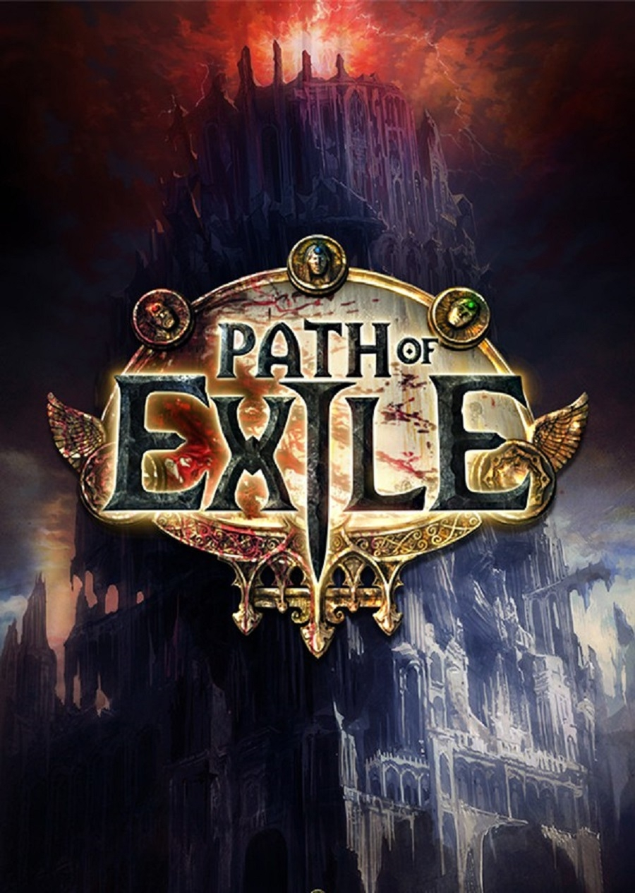

Dark Souls III (2016).
Dark Souls III is an action role-playing video game developed by FromSoftware and published by Bandai Namco Entertainment for PlayStation 4, Xbox One, and Microsoft Windows. The fourth installment of the Souls series and the final installment of the Dark Souls trilogy, the game was released in Japan in March 2016 and worldwide a month later.

The Elder Scrolls V: Skyrim (2011).
The Elder Scrolls V: Skyrim is an open world action role-playing video game developed by Bethesda Game Studios and published by Bethesda Softworks. It is the fifth main installment in The Elder Scrolls series, following The Elder Scrolls IV: Oblivion, and was released worldwide for Microsoft Windows, PlayStation 3, and Xbox 360 on November 11, 2011.
Path of Exile (2013).
Path of Exile is a free-to-play action role-playing video game developed and published by Grinding Gear Games. Following an open beta phase, the game was released for Microsoft Windows in October 2013. A version for Xbox One was released in August 2017, and a PlayStation 4 version was released in March 2019.

Tera Online (2011).
TERA (short for The Exiled Realm of Arborea), also known as TERA Online, is a massively multiplayer online role-playing game (MMORPG) developed by Bluehole Studio. The game was released in South Korea on 25 January 2011, in North America on 1 May 2012, and in Europe on 3 May 2012, with closed and open beta tests taking place before the launch dates
Ragnarok Online (2002).
Ragnarok Online (Korean: 라그나로크 온라인, marketed as Ragnarök, and alternatively subtitled The Final Destiny of the Gods) is a massive multiplayer online role-playing game created by Gravity based on the manhwa Ragnarok by Lee Myung-jin. It was released in South Korea on 31 August 2002 for Microsoft Windows.
Warcraft III: The Frozen Throne (2003).
Warcraft III: The Frozen Throne is the expansion pack for Warcraft III: Reign of Chaos, a real-time strategy video game by Blizzard Entertainment. It was released worldwide on July 1, 2003 for Microsoft Windows and Mac OS X. The Frozen Throne builds upon the story of Reign of Chaos and depicts the events after the main game's conclusion.
Monster Hunter: World (2018).
Monster Hunter: World is an action role-playing game developed and published by Capcom and the fifth mainline installment in the Monster Hunter series. It was released worldwide for PlayStation 4 and Xbox One in January 2018, with a Microsoft Windows version following in August 2018.